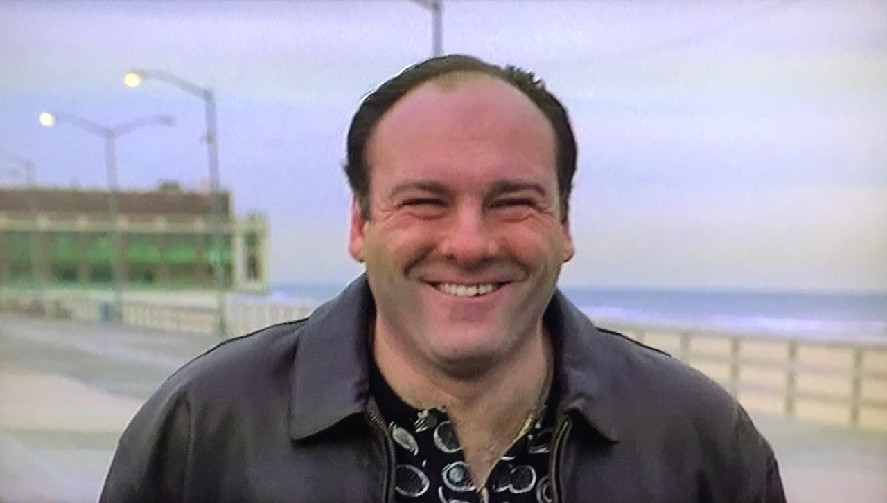

Sobre Nosotros
¿Quiénes somos?
HAPPINESS&Co es una empresa joven y dinámica asentada en Gijón, que se dedica en cuerpo y alma al mundo del ocio. Nos hemos consolidado como una referencia cultural imprescindible no solo en Asturias, sino en todo el territorio nacional.
Nuestra pasión por la cultura nos impulsa a ser el nexo de unión entre artistas y público, convirtiéndonos en una pieza clave para entender el dinamismo cultural asturiano y español en la actualidad.

Navegando en la cultura
Perdidos entre la inmensa marea de actividades culturales que existen cada día en nuestra ciudad, nos dimos cuenta de que hacía falta buscar un poco de orden y estructura en este inmenso océano de posibilidades.
Y así surgió HAPPINESS&Co: una agenda cultural que intenta recopilar y organizar todos los eventos culturales, de cualquier tipo, que tienen lugar en nuestra localidad e inmediaciones.

Nuestro Compromiso
Música, teatro, exposiciones… Todo tiene cabida en nuestra agenda. No importa cuáles sean tus gustos, nuestro objetivo es que encuentres exactamente lo que buscas para disfrutar de tu tiempo libre.
¡Bienvenidos a HAPPINESS&Co!

Nuestro Equipo

Antonio Soprano
Gestión de Residuos | RRHH
"En este negocio, o eres parte de la agenda o eres el residuo que otros tienen que recoger. Aquí nada se pierde sin mi permiso."
Especialista en logística 'pesada' y resolución de conflictos. Asegura que los eventos de la ciudad se mantengan dentro de la familia.

Miguel Scott
Director Ejecutivo
"¿Que si soy el mejor jefe? Mi taza dice que sí. Mi secreto es tratar cada evento cultural como si fuera una fiesta en Scranton."
Experto en dinámicas de grupo algo caóticas y en organizar los premios 'Dundies' de la cultura gijonesa.
Jordi
Community Manager
"Si no está en el feed, no ha pasado. En RRHH me aseguro de que todos se lleven bien... o al menos que no lo publiquen."
Visionario de las tendencias virales y guardián del buen ambiente en la oficina. Experto en cine y gestión de talento."